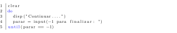

Seguinte: Problema 5.2 Acima: Problema 5.1 Anterior: JavaScript Conteúdo
O laço se encerra quando a condição for verdadeira (no faça-enquanto o laço se encerra quando a condição for falsa).
Um algoritmo em Octave, que soluciona o problema 5.1 utilizando a técnica .
